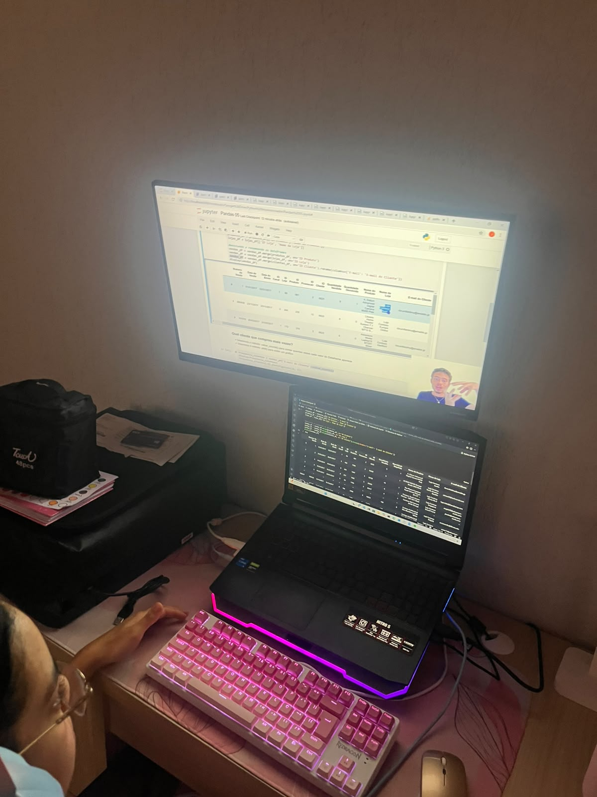
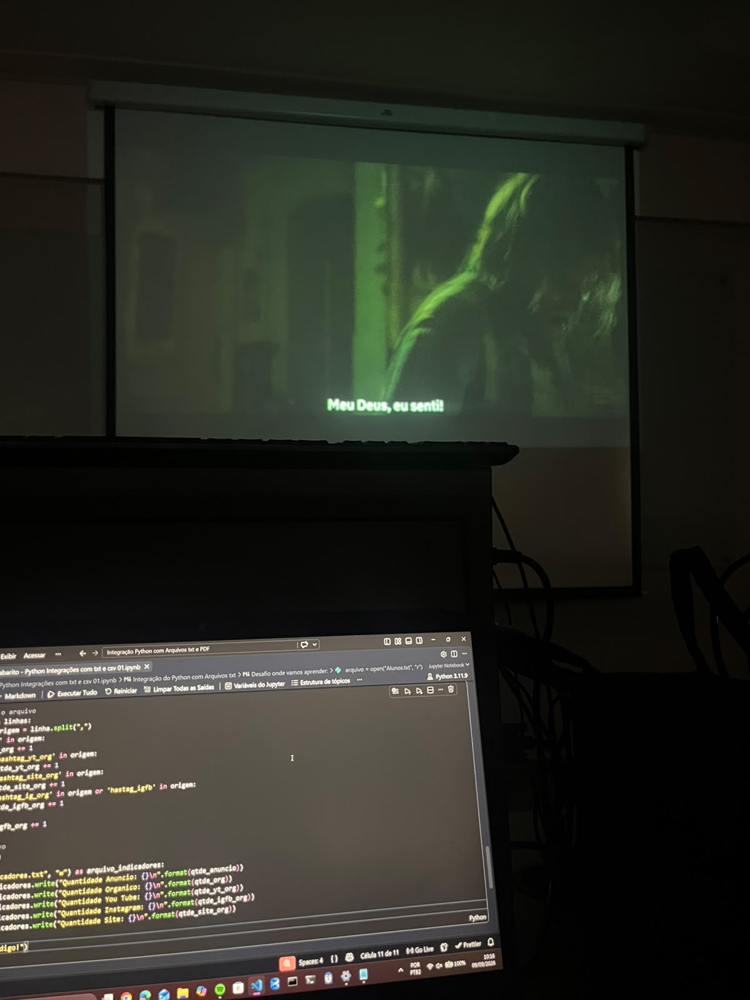

Desenvolvimento
Funcionalidades, APIs REST, Node.js, testes e arquitetura.
PORTFÓLIO • 2026
Olá, eu sou a
Dados, Automação e Desenvolvimento de Software
Estudante de Ciência da Computação. Transformo problemas em soluções por meio de tecnologia, análise de dados e automação inteligente.
Sou estudante de Ciência da Computação na Universidade Católica de Brasília e estagiária de Desenvolvimento de Software na CDS Solutions. Tenho forte interesse em explorar como a tecnologia pode simplificar processos e resolver problemas do dia a dia.
Ao longo da minha trajetória, desenvolvi soluções que conectam desenvolvimento web/backend, integração de APIs REST, análise de dados (Python/Pandas/SQL), automação de processos (RPA) e Machine Learning.
Conheça minha trajetória ↗Funcionalidades, APIs REST, Node.js, testes e arquitetura.
Python, Pandas, SQL, MySQL e Dashboards preditivos.
ServiceNow Flow Designer, PyAutoGUI e otimização de rotinas.
Modelos Preditivos (Machine Learning), OCR e IA Generativa.
Projetos desenvolvidos unindo desenvolvimento, inteligência aplicada, dados e automação.
Aplicação em ServiceNow para gestão de estoque de medicamentos na saúde pública. Inclui widget com validação de receitas por OCR, APIs REST e automação com Flow Designer. Selecionado para o Coday (Porto Digital).
Projeto Corporativo / Apresentado no Coday ↗Projeto em Python que utiliza dashboards para diagnosticar taxa de rotatividade de 56%, analisando causas e orientando um plano de ação para reduzir cancelamentos de clientes.
Ver no GitHub ↗import pyautogui import pandas as pd df = pd.read_excel("produtos.xlsx") status = "Cadastro Concluído"
Scripts em Python utilizando PyAutoGUI e Pandas para cadastro diário de milhares de produtos em sistemas corporativos e automação de rotinas administrativas e envio de relatórios.
Ver no GitHub ↗from sklearn import RandomForest model = RandomForestClassifier() model.fit(X_train, y_train) print("Pontuação Calculada")
Modelo de Machine Learning em Python para previsão de pontuação de crédito. O código prepara dados, treina e compara modelos (RandomForest e KNN) aplicados à classificação de clientes.
Ver no GitHub ↗const express = require('express'); app.get('/flashcards', (req, res) => { res.json({ status: "Pomodoro Active" }); });
Plataforma de estudos Full Stack completa com métodos Pomodoro, sistema de Flashcards e gestão de materiais. Desenvolvida utilizando HTML, CSS, JavaScript, Node.js e SQL.
Ver no GitHub ↗Habilidades e tecnologias utilizadas na construção das minhas soluções.
Formação acadêmica e experiências práticas em desenvolvimento de software, operação de dados e metodologias ágeis.
Formação sólida em algoritmos, estruturas de dados, engenharia de software e resolução estruturada de problemas computacionais.
Atuação no desenvolvimento de funcionalidades, integração com APIs REST e correção de bugs. Realização de testes para verificação de software e suporte à equipe utilizando Git/GitHub no fluxo diário.
Organização, digitalização e conferência de dados de relatórios de campo e sistemas ERP. Identificação de inconsistências, garantia da qualidade da informação e elaboração de documentos técnicos/comerciais.
Desenvolvimento de interfaces web responsivas (HTML, CSS, JS) e backend com Node.js. Operações CRUD, integração com bancos de dados, testes de APIs com Postman/Insomnia, padronização em Docker e práticas ágeis (Scrum/Kanban).
A tecnologia vai muito além da tela: eventos, hackathons, conexões com o mercado e muita prática.

Mergulhando no universo da tecnologia e inovação.

Presença confirmada no maior evento de tecnologia.

Equipe unida na apresentação do projeto FarmáciaSUS no Porto Digital.

Troca de experiências com líderes do mercado de tecnologia.
Conferência de segurança da informação e cibersegurança.

Acompanhando aulas de Python, Pandas e análise de dados no meu setup.

Praticando manipulação de arquivos e lógicas de automação.
VAMOS CONSTRUIR?
Estou aberta a conexões, aprendizados e oportunidades profissionais em desenvolvimento de software, dados e automação.
Enviar um e-mail ↗